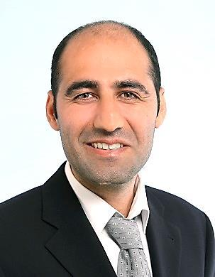

Cirriculum Vitea

Personalien
Name :Barin Kaya
Address : Bümplizstrasse 134
PLZ Ort : 3018 Bern
E-Mail : barinn.kaya@gmail.com
GitHub Link : https://github.com/incecumali
Geburtsdatum:25. Januar 1984
Zivilstand : verheiratet
Nationalität: Kurde
Ausweis : B
Ausbildung
- 2018-heute
Powercoders Coding Academy
- 2017-heute
Bachelorstudium Informatik, Berner Fachhochschule
- 2016-2017
Informatik-Basisstudium Universität Bern
- 2015
Deutschkurs, Alemania, Bern (Niveau B2)
- 2013-2015
Mathematik-Studium, Universität Bern (Master, ohne Abschluss)
- 2012-2014
Deutschkurs, Universität Bern
- 2012-2014
Deutschkurs (privat), Basel
- 2000-2008
Mathematik-Studium, Abschluss: BSc, Türkei
- 1996-1999
Gymnasium mit Schwerpunkt Physik und Mathematik, Abschluss: Matura, Türkei
Berufserfahrung
- 2016-2017
Mitarbeit in der Parkettverlegung, studienbegleitend
Dogan Parkett, Bern
- 2016-2017
Kioskverkäufer, studienbegleitend
Privatkiosk, Bern
- 2011
Einreise in die Schweiz und Integration
- 2009-2011
Mathematiklehrer
Privatausbildungszentrum, Türkei
Vorbereitung und Aktualisierung des Lehrplans für die
9. bis 12. Gymnasialklassen
Beratungen für Gymnasiasten und ihre Familien
Überprüfung der Lernprozesse der Schüler
- 2005-2006
Mathematiklehrer
Privatausbildungszentrum, Türkei
Informatik
- Javagute Kenntnisse
- Cgute Kenntnisse
- HTML, CSS, JavaScriptgute Kenntnisse
- MS Office sehr gute Anwenderkenntnisse
Sprachen
- Deutschgute mündliche und schriftliche Kenntnisse
- Türkisherste Muttersprache
- Kurdishzweite Muttersprache
- English gute mündliche und schriftliche Kenntnisse
Referenzen
Auf Anfrage